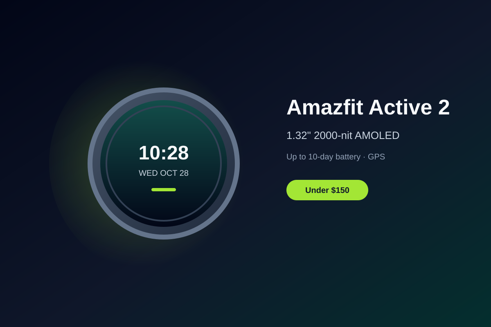

Amazfit Active 2 Review: Bright AMOLED and Week-Long Battery Under $150
The Amazfit Active 2 packs a vivid round AMOLED screen, multi-day battery, built-in GPS, and offline maps into a stylish package that regularly sells around $100.
Budget smartwatches have raised the bar, and the Amazfit Active 2 stands out by delivering premium-looking hardware and useful features without the premium price. Street prices for the Sport model often sit near $100, with the Premium version (leather strap and sapphire glass) landing closer to $130, both comfortably under $150.
The 1.32-inch AMOLED display is the standout. It reaches up to 2,000 nits, making it easy to read outdoors, and the round form factor with a stainless-steel bezel gives the watch a clean, modern look that punches above its cost. Zepp OS keeps the interface straightforward, with responsive touch controls and two physical buttons for quick access to workouts and settings.
Battery life is a major strength. Amazfit claims up to 10 days of typical use from the 270mAh cell, and real-world testing often lands in the 5–8 day range with continuous heart-rate and sleep tracking enabled. That endurance means you can go nearly a week between charges, which is a practical advantage over many daily-charge wearables.
Fitness tracking covers the essentials well: dual-band GPS with five satellite systems, 160+ sport modes, heart rate, SpO2, and sleep insights. Offline maps with turn-by-turn directions are a rare bonus at this price, letting you leave the phone behind on runs or hikes. The Zepp companion app provides readiness scores and trends without overwhelming complexity.
If you want a stylish, capable smartwatch that prioritizes display quality, battery life, and core fitness features over full app ecosystems or ECG, the Amazfit Active 2 is a strong value under $150. It delivers reliable daily utility with a design that does not look budget.
Key Takeaways
- Price Range: ~$100 – $130 (Sport and Premium on Amazon)
- Display: 1.32-inch 2000-nit AMOLED
- Battery: up to 10 days typical use
- Features: Built-in GPS, offline maps, 160+ sports, Zepp OS